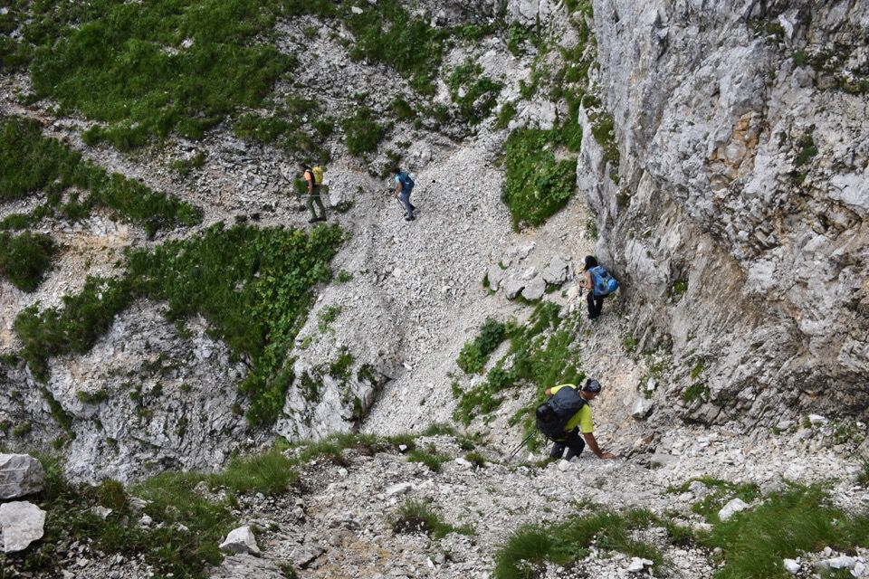

Chi passa per Sella Grubia non può non notare gli esili sentieri di camosci sulla cengia ovest del Pic di Carnizza. Da quella angolazione il passaggio sembra agghiacciante. Roba quindi da lasciare ai camosci? Eh no! Giudicare una cengia senza averci prima messo il piede sopra è un errore da principianti: il percorso, pur per avvezzi, è sempre facile.
Itinerario giudicato «molto incerto e su terreno friabile e pericoloso, ma molto pittoresco» da Mauro Botteri.
Una fresca mattina di luglio ci vede in cammino verso casera Canin.
Il Làvara che guardo sempre: prima o poi seguirò le orme di Mario Galli.
Da casera Canin parte il costone che porta fin sul Canin Basso: è la via normale al Canin, la via seguita dai primi pastori resiani che già attorno 1750 giunsero in cima.
La Carnizza, ambiente grandioso.
(Forse dopo la nord dello Zâbus ci siamo montati la testa, ma la prima cosa che qui abbiamo notato è la parete sud-ovest del Pic di Carnizza (o Pic sopra le Brame? cit. Brunner AG n.50), costituita tutta da cenge erbose dove facilmente si può salire, eccetto all'inizio dove è presente un salto forse salibile. I camosci riescono a superare il salto? È questa l'unica domanda importante secondo me. Se essi passano allora si tratta di una via naturale e io forse posso passare, altrimenti no. Dalle mie osservazioni penso che si passi.
Effettivamente di qui Botteri e Brunner ci sono passati nel 1950 (vedi qui), loro parlano di IV grado ma perché dopo il salto iniziale sono saliti per il canale anziché seguire le cenge (soliti alpinisti che vanno in cerca di difficoltà!). Sul salto iniziale Botteri scrive «Si superano alcuni gradini rocciosi non facili, tra erba, per un tratto molto alto, sino a raggiungere ad un ripidissimo prato». Beh, non resta che andare a vedere.)
Armellini nel suo libro dice che la Carnizza è «regno incontrastato dei camosci», come dargli torto, ne abbiamo visti letteralmente a centinaia!

La Carnizza: si può scendere ed incrociare il sentiero che collega casera Grubia con casera Canin.
Alpinismo acrobatico: eravamo quasi tentati di salire per quel canale, ma quando abbiamo visto ben due camosci ribaltarsi (!) ci siamo detti che forse è meglio seguire vie più facili...
L'imbuto della parete ovest racchiusa fra Pic di Carnizza e Canin.
Eccoci finalmente in vista della cengia finale, nessuna traccia umana, questo è proprio bello.
Il sentiero è battutissimo dai camosci...
...però loro hanno anche altre vie.

Ed eccoci finalmente al canalino che porta in cresta appena sopra sella Grubia: il percorso è stato più facile del previsto.

Lo Zâbus: noi sappiamo e mai dimenticheremo.
Impressionante il rio Ronc.

Il Pic di Carnizza: il piano era di salire da qui in cima al Canin per poi scendere a casera Canin lungo la via normale.
Però sto poco bene e le previsioni meteo non sono il massimo: nella mia mente rimbombano le parole di Kugy «Iddio ti salvi da un temporale sul Canin». Per cui rinuncio, viene con me anche Massimo, ci vediamo giù.
Basta spostarsi un po' e sembra impressionante vedere dove siamo passati.
È peccato però andare subito giù: decidiamo di fare un salto sul Cuel Sclâf: «È una di quelle cime modeste e decentrate che richiamano solo gli alpinisti evoluti, interessati a prospettive nuove ed a panorami inconsueti» (Marini-Galli).
Ripido!
Dalla cima verso il Sart; sotto di noi sella Blasic: «[Il Cuel Sclâf] domina il tormentato tavolato del Foran del Muss e i segreti recessi ai piedi del Sart, assieme al quale fa da stipite alla porta che introduce al Canin per chi sale dal vallone Blasic» (Marini-Galli).
Laggiù il paesino di Stretti.
La grande bellezza dei monti di Raccolana.

Torniamo giù per la stessa strada.
Giù per l'infinito sentiero che scende a Coritis.
Vediamo bene parte del percorso fatto in mattinata.

La Carnizza attraversata diverse ore prima: sul bordo dx della foto s'intravede il sentiero (in salita) che collega casera Grubia con casera Canin.
Finiamo la gita sotto ad un acquazzone mostruoso che ci fa arrivare zuppi alla macchina. Tutto bene, ma dov'è il mio portafoglio? Perso nel Foran dal Mus!!!
Certo che ci vuole una sfiga nera a perdere il portafoglio proprio nel Foran del Mus, con migliaia di buchi e fessure da ogni parte! Ma qui stiamo divagando, se t'interessa il resto della storia (a lieto fine, e con belle foto serali), clicca qui.
***